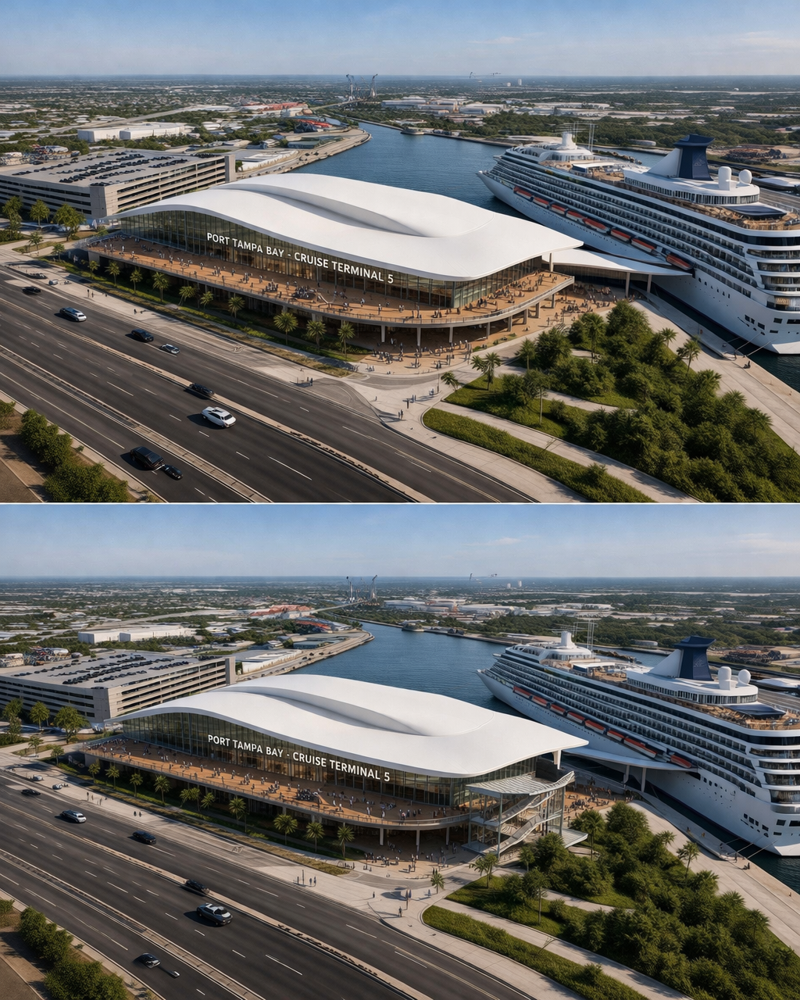
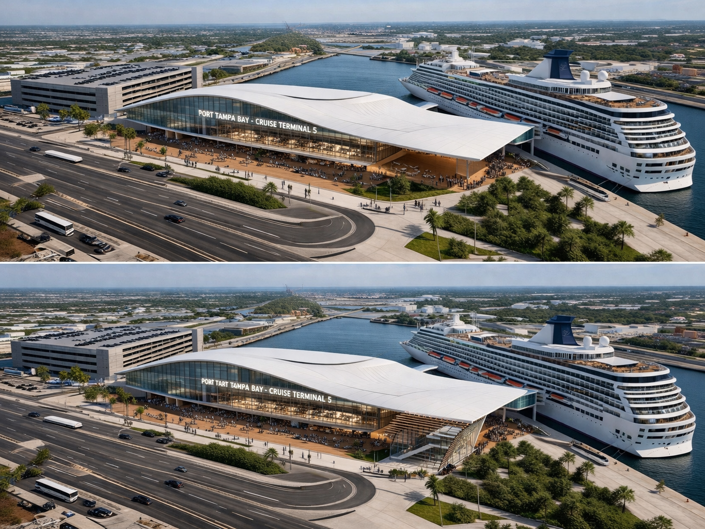
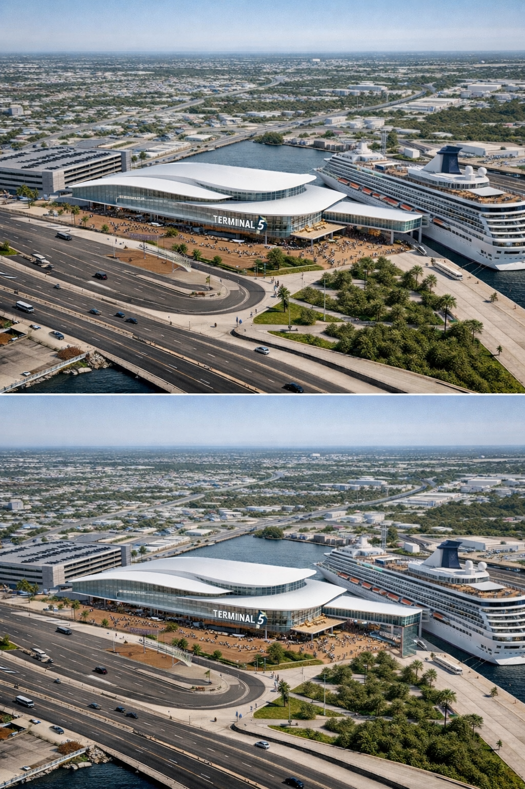
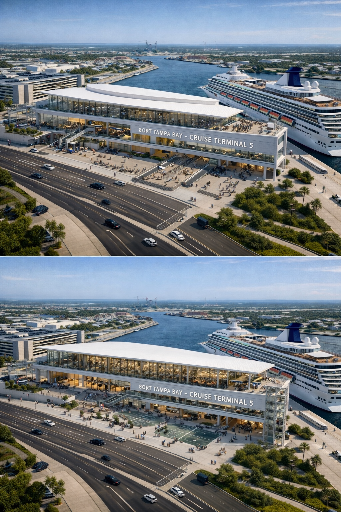
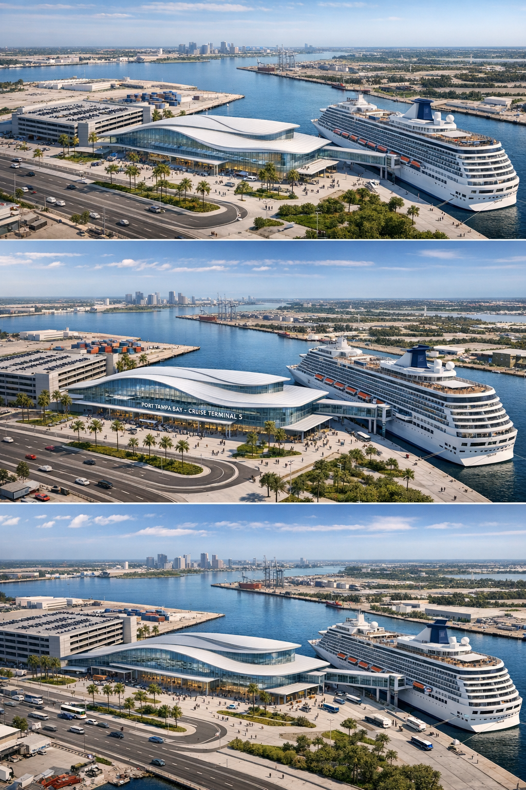
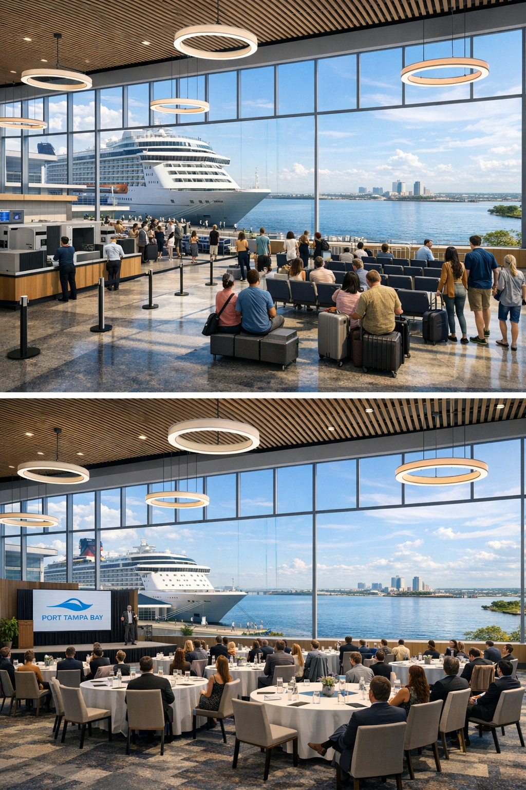

Dual-Use Civic Landmark
Terminal 5 is not a cruise terminal that happens to host events. It is a dual-use civic landmark designed to generate revenue 365 days a year — serving 3,000 passengers on ~60–80 sailing days and converting into Tampa Bay's premier waterfront event venue on the remaining ~285–305 non-cruise days.
The core architectural strategy is vertical separation: embarkation on the upper level, debarkation and federal inspection at grade. A monumental stair stitches the two levels together and serves as the building's wayfinding anchor on cruise days and its ceremonial entry on event nights.
Clear-Span Upper Hall
~15,500 SF of column-free space with flush floor boxes, dimmable lighting, acoustic treatment, and a catering kitchen. On cruise days it's check-in. On non-cruise days it's a gala venue commanding $15K–$50K+ per booking.
4–6 Hour Conversion
The terminal converts without construction — demountable kiosks, retractable baggage claim, folding FIS partitions, independent HVAC zoning. Of 36 spaces: 12 convert fully, 9 partially, 15 remain fixed.
A terminal designed exclusively for cruise operations is a depreciating asset on every non-sailing day. A terminal designed for convertibility transforms the financial model from cost center to revenue contributor.
Channelside District
Port Tampa Bay's Channelside district, within the $1.2 billion Master Plan Vision 2030 redevelopment envelope. The most actively developing waterfront corridor in the southeastern United States.


The Channel District's character was maritime-industrial from its origins over 75 years ago, serving the Port of Tampa and private shipping interests. Known as the Estuary, La Draga, and the Ybor Channel area, it was home to ships' chandlers, shipping companies, bonded warehouses, and thousands of longshoremen.
The transformation began in the late 1980s when the Tampa Port Authority acquired waterfront property and invested approximately $80 million in cruise facilities. The Florida Aquarium opened in 1995. The Channel District CRA, established in 2003 (sunsetting 2033), has funded significant infrastructure reinvestment. Today, the district is the highest-density residential community in downtown Tampa.
South (along Channelside Dr)
- Sparkman Wharf — 160,000 SF office + 70,000 SF retail
- Florida Aquarium — major regional attraction
- Tampa EDITION — luxury hotel
- Cruise Terminals 2 and 3
North / Northeast
- Ybor Harbor — 33 acres, rezoned April 2024: ~5,000 residential units, 500,000 SF office, 800 hotel rooms, proposed 15,000-seat soccer stadium
- Gasworx — 50-acre mixed-use linking Ybor City to downtown
- Tampa General Hospital — plans for a hospital within Ybor development
West
- Channel District high-rise residential (Towers of Channelside, Channel Club, SkyHouse)
- Benchmark International Arena (Tampa Bay Lightning)
- Water Street Tampa — planned 3,500-seat music venue, hotel, 100K SF retail
Arriving 2026
Tampa WOW! — 250-foot observation wheel, $20 million private investment.
- East: Direct, unobstructed water views across Ybor Channel (~500–600 ft width)
- South/SW: Tampa Bay, Garrison Channel, downtown skyline. Sunset orientation for dramatic golden-hour events.
- West: Channel District residential towers, Tampa WOW! observation wheel
- North: Upper levels clear the Selmon Expressway for long views toward Ybor City
The upper-level hall places guests ~30–40 ft above waterline — a panoramic view encompassing the full sweep from Ybor Channel to Tampa Bay to the downtown skyline. No existing event venue in the Channel District currently offers this.
Vehicular
Primary access via Selmon Expressway (I-4 East to Exit 1). Secondary via Channelside Drive and E Adamo Dr.
TECO Streetcar
Free 2.7-mile heritage streetcar connecting downtown, Channel District, and Ybor City. Three stops relevant to T-5. 15-minute intervals, extended hours on Friday/Saturday nights.
Selmon Greenway
15-foot-wide multi-use path running east-west under the Selmon Expressway, connecting Tampa Riverwalk to N. 19th Street with planned extension to Ybor City.
Tampa (ASHRAE Climate Zone 2A: Hot-Humid) averages 94 days/year above 90°F. Perceived temperatures frequently exceed 100°F in summer. ~50 inches of annual rainfall concentrated June–September with near-daily afternoon thunderstorms.
Design Response
Every exterior space gets permanent cover. The enclosed, climate-controlled pedestrian bridge from the garage to the terminal upper level is non-negotiable. Tampa's extreme climate actually strengthens the dual-use argument — enclosed, climate-controlled waterfront event space is dramatically more valuable in this market than outdoor-only alternatives.
Air Quality
Ships docking at the port release diesel exhaust from onboard generators when shore power is not available, and container handling requires heavy-duty diesel vehicles. PTB has actively invested in mitigation: electric gantry cranes, reduced truck idling programs, and $1.8M in EPA Clean Ports Program funding (October 2024) for electrification, battery-electric, hydrogen fuel cell, and green fuel technologies. Shore power infrastructure (specified in the T-5 design parameters) would allow docked vessels to shut down generators — the single biggest air quality improvement possible at the berth. Tampa's coastal breeze patterns and the Ybor Channel's orientation allow effective plume dispersal. On non-cruise days (the primary event window), air quality is clean.
Noise
Ship horn blasts at departure are dramatic but infrequent and schedulable. Vessel generator hum is eliminated by shore power. The upper-level event hall with acoustic treatment achieves the interior quiet needed for ceremonies. Outdoor ceremonies on non-cruise days have no port noise issues. For fitness uses, the port soundscape (water, ships, industrial hum) is considered atmospheric, not disruptive.
Port Tampa Bay handles ~200+ cruise departures annually across all terminals. Terminal 5 would host a subset: ~60–80 cruise days/year, leaving 285–305 non-cruise days available for dual-use programming.
Even in peak season (November–April), Mondays and Tuesdays are reliably cruise-free — creating anchor days for recurring programming.
Tampa waterfront wedding venues currently command $6,400–$7,800 per event. A premium, architecturally distinctive cruise terminal event space with panoramic bay views could command $10,000–$15,000+ per event and book 150+ non-cruise days per year. At the conservative end, that's $1.5M–$2.25M in annual ancillary revenue from the event venue alone.
At the upper range (100 events averaging $20,000+), the venue projects $2M–$5M+. Combined with parking ($500K–$1M+), F&B concessions, and community programming, the dual-use model transforms the financial equation. There is no comparable 15,500 SF waterfront event venue in the Channel District today.
SSA Marine Competing Port
SSA Marine has proposed building a cruise port in the Knott-Cowen tract near the Sunshine Skyway Bridge in Manatee County, which would allow larger ships that cannot fit under the Skyway to port in Tampa Bay. This is a competitive threat to PTB's cruise market share that strengthens the argument for T-5 being a compelling, best-in-class facility with revenue diversification — a terminal that generates value even if cruise volumes shift.
Flood Zone
The site is in FEMA coastal AE/VE zones. The vertical separation strategy (Option B) inherently addresses this by elevating primary functions above the design flood elevation.
Brownfield Designation
The entire port has been designated a Brownfield Redevelopment Area, and PTB has spent millions cleaning up contaminated industrial sites. Environmental site assessment will be essential during programming.
Selmon Expressway Access
All cruise traffic funnels through limited access points. Adding event traffic on non-cruise days is manageable; simultaneous cruise + event operations would require careful traffic management — but non-cruise days are the primary event window.
Comparable Terminals
Analysis of comparable cruise terminals and federal inspection requirements informing the design strategy.
| Opened | 2020/2021 |
| Architect | Bermello Ajamil & Partners |
| Cost | $163M |
| Size | 188,000 SF (two stories) |
| Parking | 1,800 spaces, six-story garage |
| Max Capacity | 6,630 pax |
Relevance to T-5
12 security scanning machines, pre-check kiosks, 10 check-in counters, seating for 1,700 passengers. Elevated pedestrian bridge from garage to terminal demonstrates effective vehicular/pedestrian separation. Integrated facial recognition and modernized CBP screening.
| Opened | April 2025 |
| Architect | Arquitectonica |
| Cost | ~$450M |
| Size | 493,000 SF (four stories, world's largest) |
| Daily Capacity | 36,000 passengers |
Relevance to T-5
Layered embark/debark design with both processes overlapping on different floor levels. Fully biometric passenger journey (18 face pods, 22 E-gates). Advanced baggage handling with cross-belt conveyor technology and 42 screening machines.
| Opened | November 2018 |
| Architect | Broadway Malyan / B&A |
| Cost | ~$250M |
| Size | 170,000 SF |
| Capacity | ~7,000 pax (Oasis-class) |
Relevance to T-5
Closest in scale to T-5 (120K–180K SF range). LEED Silver. Shore power added 2024. Angular glass design shows how iconic expression can be achieved at mid-range cruise terminal scale.
| Metric | CT3 Canaveral | Terminal AA | Terminal A |
|---|---|---|---|
| Terminal SF | 188,000 | 493,000 | 170,000 |
| Stories | 2 | 4 | Multi-level |
| Parking | 1,800 | 2,400+ | 1,000 |
| Max Pax | 6,630 | 36,000/day | ~7,000 |
| Cost | $163M | $450M | $250M |
| Biometrics | Facial recognition | Full biometric | Expedited |
| LEED | Not certified | Gold (pending) | Silver |
The FIS area is one of the most technically constrained zones. Design governed by CBP's Cruise Terminal Design Standards, project-specific Program of Requirements developed with CBP Director of Field Operations.
FIS Process Flow
- Sterile Corridor: From debark ramp, no mixing with domestic traffic. CCTV throughout.
- CBP Primary: 10–12 primary inspection booths, APC kiosks, Global Entry, biometric face-pods.
- Secondary Processing: Document verification, baggage examination, 2–3 interview rooms, secure holding.
- APHIS: Agriculture inspections for prohibited food, plant, and animal products.
Space Requirements
| Primary Inspection | 2,500–3,000 SF |
| Coordination Center | 300–500 SF |
| Unified Secondary | 800–1,200 SF |
| APHIS / Agriculture | 400–600 SF |
| CBP Admin Offices | 1,000–1,500 SF |
| Sterile Corridor | 800–1,200 SF |
THEA's $752 million Work Plan (FY2026–2031), approved July 2025, includes the South Selmon Capacity Project — upgrading all 14 underpasses with wider sidewalks, pedestrian lighting, and community spaces including the Meridian Health Trail.
Construction begins spring 2026, overlapping directly with the T-5 timeline.
Position the underpass improvement as a joint PTB/THEA/City of Tampa initiative. T-5's design team designs the underpass connection; THEA funds infrastructure; the City contributes public art or CRA funds. The result stitches the cruise port to Ybor Harbor and unlocks foot traffic in both directions.
Two One-Way Loops
The two loops never cross, enabling simultaneous embarkation and debarkation on turnaround days.
Embarkation — Upper Level
Curbside → luggage drop → check-in (60–70% self-service) → security (6–8 lanes) → post-security holding (1,500–1,800 seats) → boarding bridge
Debarkation — Grade Level
Vessel → dedicated ramp → sterile corridor → FIS primary → secondary/APHIS → baggage claim (3,000 bags/2 hr) → meeter-greeter → curbside
Design Day Parameters
- Full Turnaround: 3,000 departing + 3,000 arriving + ~1,000–1,200 crew
- Peak Embarkation: 4–5 hours (11AM–4PM)
- Peak Debarkation: 3–4 hours (7AM–11AM)
- Growth Scenario: Model 4,500–5,000 pax
Modeling Tools
- DES: Discrete Event Simulation (AnyLogic, Simio, Arena)
- LOS Analysis: IATA Level of Service standards, target LOS B/C
- Pedestrian Sim: Oasys MassMotion or PTV Viswalk
Five Critical Moves
Move 1 — The Section
Option B vertical strategy: embarkation upper level, debarkation/FIS/baggage at grade. The single most consequential decision. Upper level datum at +30–40 ft above waterline, clearing the Selmon sightline and delivering panoramic harbor views.
Move 2 — The Clear-Span Upper Hall
~15,500 SF as a single contiguous hall, not a processing corridor. Target 60–80' clear-span structural bays. Flush floor boxes, dimmable lighting, acoustic treatment, commercial-grade catering kitchen.
Move 3 — Site Organization
Three parallel bands running north–south along the Ybor Channel:
- Waterside (east): Terminal on berth, boarding bridge upper level, debark ramp at grade
- Middle: Covered curbside / event plaza — hardscape rated for food trucks, distributed power/water
- Landside (west): 800-space parking garage, pedestrian bridge, rooftop observation deck
The building's most visible interior architectural element. On cruise days: intuitive wayfinding anchor alongside 4 elevators and 4 escalator pairs. On event nights: the ceremonial arrival — a dramatic ascent with views opening as guests climb.
Gallery Walls
Walls along the stair are programmed as display surfaces: gallery-quality finishes, integrated picture-hanging rail, adjustable accent lighting. Zero-cost amenity — the wall exists; treating it as display adds only rail and lighting tracks.
The Selmon Expressway creates a hard urban edge: shadowed, 65–75 dBA road noise, narrow sidewalks. It separates the cruise port from Ybor Harbor (33 acres, 5,000 units, 800 hotel rooms).
THEA's $752M Work Plan overlaps with T-5's timeline. Widened promenade (15–20'), murals, lighting, acoustic panels, wayfinding connecting T-5 to Ybor Harbor.
In ASHRAE 2A, the building envelope is not a skin decision — it is one of the primary architectural moves. Every exterior space gets permanent cover.
The Garage Bridge
Enclosed, climate-controlled pedestrian bridge is non-negotiable. An exposed walkway in Tampa's climate is a failure. This bridge is where most passengers first touch the terminal — it must be architecturally treated. On non-cruise days, it is the event arrival sequence.
Design target: 4–6 hour transformation without construction, by trained operations staff.
- Demountable check-in kiosks on casters with quick-disconnect power/data
- Retractable queue barriers stored in wall pockets
- Fold-flat baggage claim devices flush with floor
- Demountable FIS partitions on track systems (where CBP permits)
- Independent HVAC zoning for partial building activation
Current design day is 3,000 passengers; RFQ requires planning for 4,500–5,000.
- Expandable check-in hall with flexible kiosk layout
- Structural bays sized for terminal extension
- Oversized MEP risers and utility chases
- Modular baggage handling system layout
- Test the SD layout against growth scenario before locking footprint
| Space | SF | Cruise Day | Non-Cruise Day | Fit |
|---|---|---|---|---|
| Upper-Level Hall | ~15,500 | Check-in, security, holding | Galas, corporate conferences, trade shows, wedding receptions. Monumental stair and water views are the selling point. $10K–$15K+/event. | Excellent |
| VIP Lounge | 2,000 | Premium lounge | Rentable private event suite — corporate retreats, rehearsal dinners, small fundraisers. Separate entry, already configured. | Excellent |
| Retail & F&B | 2,500 | Concessions | Dual-facing restaurant/cafe serving Channel District. Think Sparkman Wharf dining, but with bay views. | Excellent |
| Pedestrian Plaza | N/A | Curbside | Weekend farmers markets, food truck rallies, outdoor concert series. Zero building modification. Ties T-5 into the Channel District pedestrian loop. | Strong |
| Parking Garage | ~240K | Cruise parking | Solves the district's chronic parking shortage. Aquarium, Sparkman Wharf, Water St Tampa, event attendees. Dynamic pricing. | Excellent |
| Garage Rooftop | N/A | Parking | Public observation deck & park. Harbor views and Skyway Bridge sightlines. Turns dead structure into a destination. | Strong |
| Ground-Level Debark | ~16K | FIS, baggage | Indoor fitness, pickleball pop-ups, community health fairs. 20' clear height. The "working out while watching cruise ships" angle is genuinely unique. | Good |
| Community Rooms | ~1,900 | Amenities | Yoga classes, mindfulness sessions, community meeting rooms. Low operational overhead, high goodwill. | Strong |
| Meeter-Greeter | 2,500 | Reunification | Maritime education partnerships with local schools. Rotating art exhibitions. Permanent interpretive exhibit on Tampa's port history. | Strong |
Architecture from Site Conditions
Five named design drivers and a comprehensive environmental strategy developed through iterative analysis. The architecture emerges from Tampa's specific climate, light, and waterfront conditions.
1. Arrival as Threshold
The entry sequence frames the water and ship view. The architectural language shifts intentionally from opaque and grounded on the landside to transparent and light on the waterside. This is the primary experiential driver.
2. Structure as Expansion Framework
40–45 ft structural bay modules; 80–100 ft column-free spans in the main hall; pre-positioned expansion joints and utility stubs at the growth edge. The structure is not just load-bearing — it is designed as a framework for future expansion.
3. Light as Orientation
Toplighting in the holding area; directional clerestories oriented toward the waterside; controlled darkness in the FIS sterile zone. Light is used as a wayfinding and mood-setting device, guiding passengers through the sequence.
4. Roof as Environmental Machine
Deep cantilevered overhangs (6–8 ft on south/west) for solar shading. Integrated photovoltaic panels (60,000–80,000 SF canopy on garage roof and curbside). High-SRI surface treatment. Rainwater collection. The roof is simultaneously structure, environmental mediator, and energy generator.
5. Tampa Identity
Waterfront culture, subtropical landscape, Channel District character. The architecture emerges from site conditions rather than applied iconography.
Envelope
- South/west overhangs of 6–8 ft for solar control
- Low-SHGC / high-VLT glazing (block heat, admit light)
- Insulated metal panel or precast for BOH walls
- High-SRI cool roof assembly
Mechanical
- HVLS (high-volume low-speed) fans for air movement
- High-efficiency chillers with variable-speed drives
- Demand-controlled ventilation (DCV) with CO2 sensing
- Thermal energy storage (ice or chilled water) for peak demand shifting
Energy
- Shore power conduit and switchgear for future vessel connection
- PV canopy: 60,000–80,000 SF on parking garage roof and curbside canopy
- Battery energy storage system (BESS) as supplement to diesel generation
Resilience
- Critical systems above design flood elevation (FEMA AE/VE)
- Generator sized for full FIS and life-safety operations
- Vertical separation inherently elevates primary functions above flood
Port Tampa Bay is Florida's largest and most diversified seaport and the largest economic engine in West Central Florida, located on the Interstate-4 Corridor.
Florida Cruise Context
- 19.4 million cruise passengers statewide in 2023 (record) — 3.1% CAGR since 2010
- Florida handles nearly 60% of all U.S. cruise embarkations
- The cruise industry creates 158,992 jobs and $8.1 billion in income statewide
- PTB is specifically named alongside Palm Beach and JAXPORT as ports investing in homeport facilities to shape future cruise growth
- Two new Florida ports (Seaport Manatee, Port St. Pete) anticipating new cruise traffic
Decarbonization & Alternative Energy
PTB received $1.8M EPA Clean Ports Program funding (October 2024). Working with maritime partners on alternative fuel terminals through hydrogen and carbon capture pilot projects. Developing shore power opportunities with cruise business partners. PTB contributes to the statewide $2.9 billion Capital Improvement Plan (top 5 ports account for 91% of the $5B CIP budget 2024–2028).
96,100 SF Enclosed
36+ spaces, each programmed for both cruise-day and non-cruise-day function. Of 36 spaces: 12 Full 9 Partial 15 Fixed
| No. | Space | SF | Level | Convert |
|---|---|---|---|---|
| A.01 | Main Entry / Check-In | 8,000 | Upper | Full |
| A.02 | Security Screening | 3,500 | Upper | Full |
| A.03 | Post-Security Holding | 5,000 | Upper | Full |
| A.04 | VIP / Loyalty Lounge | 2,000 | Upper | Full |
| A.05 | Retail / F&B | 2,500 | Upper | Full |
| A.06 | Family / Accessible | 1,200 | Upper | Full |
| A.07 | Boarding Bridge | 1,500 | Upper | Partial |
| No. | Space | SF | Level | Convert |
|---|---|---|---|---|
| B.01 | Debarkation Ramp | 2,000 | Upper→Grade | Fixed |
| B.02 | CBP / FIS | 6,000 | Grade | Full |
| B.03 | Baggage Claim | 10,000 | Grade | Full |
| B.04 | Meeter-Greeter | 2,500 | Grade | Full |
| No. | Space | SF | Convert |
|---|---|---|---|
| C.01 | Luggage Laydown — Embark | 8,000 | Partial |
| C.02 | Luggage Laydown — Debark | 8,000 | Partial |
| C.03 | BHS Equipment Room | 3,000 | Fixed |
| C.04 | Cart / Equipment Storage | 1,000 | Partial |
| No. | Space | SF |
|---|---|---|
| D.01 | Passenger Elevators (4) | 1,200 |
| D.02 | Escalators (4 pairs) | 2,400 |
| D.03 | Monumental Stair | 1,800 |
| D.04 | Service Elevator(s) | 600 |
| D.05 | Egress Stairs (code) | 2,000 |
E. Operations & Back-of-House — 10,000 SF
| E.01 | Port Office | 1,500 |
| E.02 | CBP Office Suite | 2,000 |
| E.03 | Cruise Line Ops | 2,500 |
| E.04 | Staff Break/Lockers | 1,000 |
| E.05 | Janitorial | 500 |
| E.06 | Loading Dock | 2,500 |
F. Building Systems — 9,800 SF
| F.01 | Electrical / Switchgear | 2,000 |
| F.02 | HVAC Mechanical | 3,500 |
| F.03 | Fire Pump | 800 |
| F.04 | IT / Telecom | 1,200 |
| F.05 | Emergency Generator | 1,500 |
| F.06 | Elevator Machine | 800 |
G. Public Amenities — 4,100 SF
| G.01 | Public Restrooms | 3,000 |
| G.02 | Nursing Room | 300 |
| G.03 | Pet Relief | 400 |
| G.04 | Interfaith / Meditation | 400 |
| H.01 | Curbside Drop-Off | Covered canopy, bus/taxi/rideshare |
| H.02 | Parking Garage | 800 spaces, ~240,000 SF, pedestrian bridge |
| H.03 | Bus Staging | Tour bus loading, layover |
| H.04 | Pedestrian Plaza | Landscaped entry, wayfinding |
| H.05 | Utility Yard | Stormwater, electrical service |
Non-Cruise-Day Program
How every space converts on the ~285–305 non-cruise days per year. Mondays and Tuesdays are reliably clear even in peak season.
| No. | Cruise-Day | Non-Cruise-Day Use | SF | Convert |
|---|---|---|---|---|
| A.01 | Check-In Hall | Event reception / registration hall; conference registration | 8,000 | Full |
| A.02 | Security Screening | Absorbed into open event floor; equipment retracted | 3,500 | Full |
| A.03 | Post-Security Holding | Premier event hall: galas, conferences, weddings ($15K–$50K+) | 5,000 | Full |
| A.04 | VIP Lounge | Private event suite: corporate retreats, rehearsal dinners, brand activations | 2,000 | Full |
| A.05 | Retail / F&B | Public-facing restaurant / cafe via dual-access storefronts | 2,500 | Full |
| A.06 | Family / Accessible | Community wellness: yoga, meditation, neighborhood meetings | 1,200 | Full |
| A.07 | Boarding Bridge | Waterside terrace / viewing gallery; cocktail reception overflow | 1,500 | Partial |
| No. | Cruise-Day | Non-Cruise-Day Use | SF | Convert |
|---|---|---|---|---|
| B.01 | Debark Ramp | Secondary service access or closed | 2,000 | Fixed |
| B.02 | CBP / FIS | Indoor recreation: pickleball courts, volleyball, fitness events | 6,000 | Full |
| B.03 | Baggage Claim | Community events: health fairs, blood drives, indoor markets, maker fairs | 10,000 | Full |
| B.04 | Meeter-Greeter | Maritime history exhibit / rotating art gallery | 2,500 | Full |
| No. | Cruise-Day | Non-Cruise-Day Use | SF | Convert |
|---|---|---|---|---|
| C.01 | Luggage Embark | Event staging / food truck commissary support | 8,000 | Partial |
| C.02 | Luggage Debark | Vendor load-in / overflow market stalls | 8,000 | Partial |
| C.03 | BHS Equipment | Fixed — mechanical systems in place | 3,000 | Fixed |
| C.04 | Cart Storage | Event equipment: tables, chairs, stanchions, AV | 1,000 | Partial |
| E.01 | Port Office | Event management office: scheduling, AV control | 1,500 | Partial |
| E.02 | CBP Office | Secured and locked — federal space | 2,000 | Fixed |
| E.03 | Cruise Line Ops | Event production suite: green room, vendor coordination, AV | 2,500 | Full |
| E.04 | Staff Break | Break room for event crew, catering, security | 1,000 | Partial |
| E.06 | Loading Dock | Event load-in/load-out; catering deliveries | 2,500 | Partial |
| No. | Cruise-Day | Non-Cruise-Day Use | Convert |
|---|---|---|---|
| H.01 | Curbside | Restaurant valet / event drop-off; rideshare | Partial |
| H.02 | Parking Garage | Daily/monthly public parking: Aquarium, Sparkman Wharf, Water St; LPR dynamic pricing | Full |
| H.03 | Bus Staging | Tour bus for Aquarium/downtown; charter bus for events | Partial |
| H.04 | Pedestrian Plaza | Public market, food truck court, outdoor concerts, festivals | Full |
Program Color Plans
Side-by-side floor plans showing Level 1 (Grade) and Level 2 (Upper) with all programmed spaces. Toggle between Cruise Day and Non-Cruise Day configurations to see how each space converts. Hover over blocks for details.
Exterior & Interior
Exterior Massing — Primary Concept

The building form is aerodynamic — shaped to protect pedestrians from strong winds at the waterfront without creating ground-level turbulence. The curved roof profile also blocks high-angle sun while filling the interior with indirect natural light through clerestory glazing. The bottom image adds an exterior monumental stair at the south face — a public civic gesture connecting the plaza level to the upper-level event hall, visible from the water and the Selmon Expressway.
Interior — Dual Use Comparison

Top: Upper-level hall configured for cruise day — check-in kiosks, holding seating, panoramic harbor views through full-height glazing, cruise ship at berth. Bottom: Same hall configured as event venue — banquet tables, stage presentation, Port Tampa Bay branding, identical panoramic views transformed into a premium event backdrop.
Terrace — Dual Use

Top: A couple watches from the covered upper-level terrace as passengers board the cruise ship below — the same view that becomes the event venue's greatest asset. Bottom: The identical terrace transformed for an evening wedding reception with string lights, the harbor and sunset as backdrop. There is no venue like this in the area with that view.
Interactive WebGL Model
Scaled massing model of the terminal, garage, curbside zone, and berth in three-dimensional context. Orbit, zoom, and pan to explore the site organization and building volumes.
Process & Record
This entire body of work — research, programming, analysis, visualization, and this website — was produced through a collaborative process between a designer and two AI platforms over approximately one week in March 2026. It has been a genuine collaboration, and documenting the process honestly is part of the value.
ChatGPT (OpenAI)
Initial project research, RFQ interpretation, site analysis, operational modeling, dual-use strategy development, design narrative writing, circulation logic, and all concept image generation (exterior massing studies, interior dual-use renders, terrace visualizations).
Claude (Anthropic)
Document production (DOCX/PDF in Calvey format), program database structuring (JSON/XLSX), comparable terminal research, CBP/FIS technical requirements, interactive visualization code (HTML/SVG/JS), environmental strategy, and this design workshop website.
By the Numbers
Process Timeline
Phase 1 — RFQ Intake & Translation
The 47-page RFQ PDF was read, extracted, and translated from procurement language into architectural design language. Rather than a compliance checklist, the question became: what kind of building should this be? How do flows separate? What should the public experience feel like?
Phase 2 — Site & Context Research
Comprehensive site assessment across two versions: V1 covered site identity, surrounding development (Ybor Harbor, Sparkman Wharf, Water Street Tampa), environmental evaluation, and revenue projections. V2 expanded with cruise schedule analysis, multi-modal circulation, ASHRAE 2A climate response, and Selmon underpass design strategies. GIS parcel investigation was attempted through Hillsborough County endpoints.
Phase 3 — Program Development
Three major versions of the Design Parameters document, each representing a genuine intellectual leap. V1: RFQ extraction. V2: dual-use programming framework with space-by-space convertibility matrix. V3: restructured as a design-driving instrument with site drivers, 41-space program database, three sectional strategies (A/B/C), and recommendation of Option B vertical separation. Program data maintained in parallel across DOCX, PDF, Excel (3 sheets), and JSON (v0.2, v0.3) formats with cross-validated totals.
Phase 4 — Design Strategy & Narrative
Development of the dual-use revenue thesis, five design ideas (monumental stair, Selmon activation, envelope as architecture, convertibility mechanics, scalability), passenger flow sequences, and the Pursuit Briefing synthesis. The SD Synopsis distilled everything into 10 critical schematic design moves. Environmental strategy added in v0.3 JSON (envelope, mechanical, energy with PV canopy, resilience).
Phase 5 — Image Generation & Visualization
ChatGPT generated all concept renders: 10 exterior massing studies exploring roof form, facade transparency, and civic presence; interior dual-use comparisons showing the same space as cruise check-in and banquet venue; terrace views showing embarkation day vs. evening wedding reception. The designer then composited and refined select images in Photoshop (noted on the primary exterior concept). Claude built the interactive program color plans (HTML/CSS/JS with side-by-side floor plans, hover tooltips, cruise/non-cruise toggle), SVG passenger flow diagrams, and the Excel program matrix.
Phase 6 — Design Workshop Website
Claude built this website — reading all source documents (5 DOCX files, 1 XLSX, 4 images, 1 SVG), synthesizing the full content, and producing a single portable HTML file in the Calvey Form aesthetic. The site went through multiple iterations: initial dark theme build, full rebuild in the light Calvey aesthetic, color plan rebuild with side-by-side layout and lightbox, flow diagram rebuild as inline SVG, Excel data integration as tabbed popup, render annotations, design drivers section, PTB stats from the FSTED Seaport Mission Plan, and muted color palette refinements.
ChatGPT
- Initial RFQ interpretation and translation into design language
- Site analysis, neighborhood assessment, and revenue strategy development
- Operational modeling — embarkation/debarkation flow logic, level organization, circulation sequencing
- Dual-use strategy framing — the core idea that the terminal should generate value 365 days/year
- Design narrative and storytelling — shaping the material into presentation-ready language
- All 10 concept renders — exterior massing options, interior dual-use comparisons, terrace visualizations
- Preliminary massing exploration and architectural character studies
Claude
- 16 DOCX documents across 12+ versions (Design Parameters V1–V3, Site Assessment V1–V2, SD Synopsis, Pursuit Briefing) in Calvey template format
- 16 companion PDFs with architectural grid backgrounds
- 4 JSON program databases (v0.2, v0.3, paired cruise/non-cruise day files) with 41 spaces across 8 categories
- 3-sheet Excel program matrix (cruise-day, dual-use, non-cruise-day)
- Comparable terminal research — Port Canaveral CT3, PortMiami Terminal AA, PortMiami Terminal A with benchmarking data
- CBP Federal Inspection Service technical requirements and spatial standards
- Environmental strategy — envelope, mechanical, energy (PV canopy specs), resilience
- 5 architectural design drivers formalized from iterative analysis
- Interactive program color plans (HTML/CSS/JS) with 40+ positioned blocks, cruise/non-cruise toggle, hover tooltips
- SVG passenger flow diagrams (embarkation + debarkation sequences)
- SVG circulation map
- This design workshop website — ~1,500 lines of hand-built HTML with 11 sections, 35 expandable panels, 7 images, 2 lightboxes, inline SVG, embedded iframes, tabbed data views
Calvey
- Direction, iteration, and quality control across every phase
- Photoshop compositing of select exterior renders (adding exterior monumental stair, refining massing)
- 22 site photographs documenting existing conditions
- Architectural judgment calls — which ideas to pursue, spatial priorities, massing refinement
- Drove the dual-use thesis from concept to conviction
The process followed a consistent pattern across both AI platforms:
- Read source material — RFQ, site data, precedent information fed directly to AI
- Translate procurement → design — converting consultant task lists into architectural questions
- Build operational model — testing how passengers, baggage, staff, and vehicles move
- Build spatial/program model — organizing by levels, adjacencies, circulation, support
- Test against the site — comparing emerging ideas against the actual waterfront setting
- Expand into strategy — dual-use revenue, civic identity, community positioning
- Visualize — renders, diagrams, interactive tools, plan graphics
- Synthesize & present — shaping everything into this workshop briefing
Each document version represented a genuine intellectual leap, not just editorial revision. V1 → V2 → V3 of the Design Parameters document went from RFQ extraction to dual-use framework to a full design-driving instrument with sectional strategy options. The project matured from research → interpretation → strategy → design narrative → visual concepting in approximately one week.
All Concept Renders
Generated by ChatGPT (OpenAI), composited by the designer. Click to enlarge.








